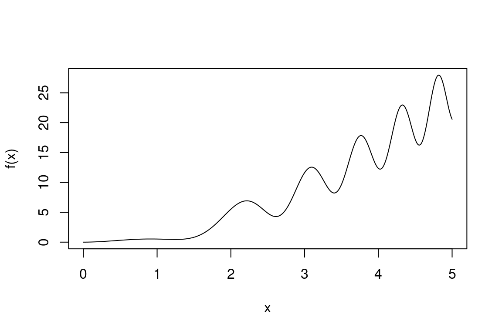
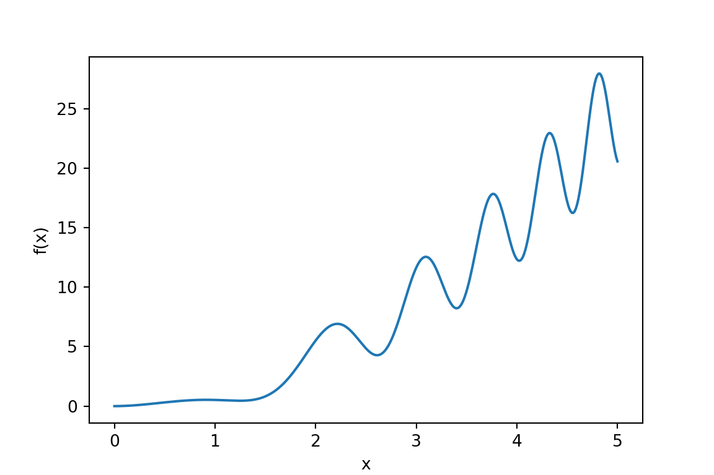
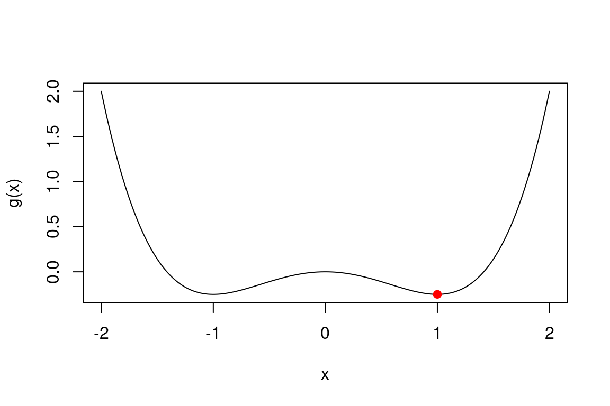

lbs_to_grams <- function(lbs) {
grams <- 453.5924 * lbs
return(grams)
}3 Week 3: Functions and Functional Programming
Last week ended with us descending a hill by repeating x <- x - gamma * slope (x = x - gamma * slope in Python) inside a for loop, with the derivative hard-coded inline (Section 2.8). It worked, but every new function to minimise meant rewriting the loop. This week we fix that properly. First we learn to write our own functions, and collect the repetition tool that had to wait for them: recursion, a function calling itself. Then we go one step further and treat functions themselves as data: passing them around, building them on the fly, mapping them over collections. By the end of the chapter our gradient descent will take any function you throw at it, which is exactly the tool Chapter 5 is built on.
3.1 Writing your own functions
We have been using functions since minute one: sqrt(), length(), mean(), seq(); or, on the Python side, np.sqrt(), len(), np.mean(), np.arange(). Each takes an input, does its job, and hands back an output. The real power move is writing your own. The rule of thumb: if you find yourself copy-pasting the same code a third time, stop and write a function. In coding, laziness done right is a virtue.
Let’s write a function that converts pounds to grams, using g = 453.5924 \cdot \text{lbs}:
R
Python
def lbs_to_grams(lbs):
grams = 453.5924 * lbs
return gramsAnatomy of the R snippet:
function(lbs)creates a new function whose argument is calledlbs;- the body between
{ }is the code that runs on every call; return(grams)says what comes out;- the whole thing is assigned to the name
lbs_to_gramswith<-, exactly like any other variable. Keep that thought: it becomes important later in the chapter.
Note for Python: the anatomy differs in the details. def lbs_to_grams(lbs): both names the function and lists its arguments in one go, with no separate assignment step; the body is marked by indentation rather than { } (four spaces, consistently); and return grams needs no parentheses.
Calling it works as you would expect:
R
lbs_to_grams(2)[1] 907.1848lbs_to_grams(lbs = 3) # naming the argument is optional here[1] 1360.777Python
lbs_to_grams(2)907.1848lbs_to_grams(lbs=3) # naming the argument is optional here1360.7772And because the body is just vectorised arithmetic (Chapter 1), it happily takes a whole vector:
R
lbs_to_grams(c(1, 2, 3))[1] 453.5924 907.1848 1360.7772Python
# importing numpy (the hidden setup did too; repeated imports are free)
import numpy as np
lbs_to_grams(np.array([1, 2, 3]))array([ 453.5924, 907.1848, 1360.7772])Note for Python: hand it a numpy array, not a plain list: 453.5924 * [1, 2, 3] is an error (and 3 * [1, 2] would repeat the list, not multiply it).
A few naming guidelines: lowercase, words separated by _, concise but meaningful, and avoid clobbering existing names like mean or c in R, or len, sum and list in Python (both languages will let you; your future self will not forgive you).
3.1.1 Arguments and defaults
Functions can take several arguments. To convert pounds to millilitres we also need the specific mass \rho of the substance, since ml = g / \rho:
R
lbs_to_ml <- function(lbs, specific_mass) {
ml <- lbs_to_grams(lbs) / specific_mass
return(ml)
}
lbs_to_ml(2, 1) # water[1] 907.1848lbs_to_ml(2, 0.92) # oil[1] 986.0704Python
def lbs_to_ml(lbs, specific_mass):
ml = lbs_to_grams(lbs) / specific_mass
return ml
lbs_to_ml(2, 1) # water907.1848lbs_to_ml(2, 0.92) # oil986.0704347826087Note that lbs_to_ml calls the function we wrote earlier: functions building on functions is the normal way programs grow.
If 90% of our conversions are for water, typing 1 every time gets old. We can make the argument optional by giving it a default value:
R
lbs_to_ml <- function(lbs, specific_mass = 1) {
ml <- lbs_to_grams(lbs) / specific_mass
return(ml)
}
lbs_to_ml(2) # default: water[1] 907.1848lbs_to_ml(2, 0.92) # positional[1] 986.0704lbs_to_ml(2, specific_mass = 0.92) # named -- same thing, more readable[1] 986.0704Python
def lbs_to_ml(lbs, specific_mass=1):
ml = lbs_to_grams(lbs) / specific_mass
return ml
lbs_to_ml(2) # default: water907.1848lbs_to_ml(2, 0.92) # positional986.0704347826087lbs_to_ml(2, specific_mass=0.92) # named -- same thing, more readable986.0704347826087Arguments are matched by position first, and by name when you spell the name out. With many arguments, naming the non-obvious ones makes code much easier to read: compare rnorm(10, 5, 2) with rnorm(10, mean = 5, sd = 2). The same positional/keyword rules hold in Python: compare rng.normal(5, 2, 10) with rng.normal(loc=5, scale=2, size=10).
Note for Python: default values are evaluated once, when the def statement runs, not afresh at each call as in R. With immutable defaults like 1 you will never notice the difference. With a mutable default you will: in def add_entry(x, log=[]), every call shares the same list, which quietly accumulates entries across calls. The standard idiom is a None default plus if log is None: log = [] inside the body.
Exercise 3.1: Cooking for Remy
A small French rat with a strong culinary vision (title omitted for copyright reasons) has moved to the US, where recipes measure everything in cups. He has hired you to sort out the conversions.
- Write
cups_to_ml(cups)using ml = 236.588 \cdot \text{cups}. - Write
ml_to_grams(ml, specific_mass)using g = ml \cdot \rho, where \rho is the specific mass. - Write
cups_to_grams(cups, ingredient = "water")which:- converts cups to millilitres with
cups_to_ml; - picks the specific mass with an
if/else if/elsechain (elifin Python) oningredient(Chapter 2), using: water 1, flour 0.53, oil 0.92, oat milk 1.03; - returns the result of
ml_to_gramswith those values.
- converts cups to millilitres with
- Test it on: 2 cups of water; half a cup of oil; 3 cups of oat milk; 2 cups of flour plus one cup of water.
Exercise 3.2: Standardise, with options
Write standardise(x, center = TRUE, scale = TRUE) which takes a numeric vector and:
- subtracts
mean(x)(Python:np.mean(x)) ifcenterisTRUE; - divides by
sd(x)(Python:np.std(x, ddof=1)) ifscaleisTRUE; - returns the transformed vector.
Test all four combinations of center and scale on x <- c(2, 4, 6, 8, 100) (Python: x = np.array([2, 4, 6, 8, 100])). Then check the full standardisation with mean(standardise(x)) and sd(standardise(x)). In the R run the mean will print as something like 1e-17 rather than exactly 0 (the numpy run may print an exact 0.0: a lucky cancellation, not a guarantee). Recall the floating-point discussion in Chapter 2, and confirm with all.equal(mean(standardise(x)), 0) (Python: np.isclose(...)).
3.1.2 Return values
Three things worth knowing about what comes out of a function.
Implicit return. If R reaches the end of the body, the value of the last expression is returned automatically, no return() needed:
R
lbs_to_grams <- function(lbs) {
453.5924 * lbs # last expression: returned automatically
}
lbs_to_grams(2)[1] 907.1848Python
def lbs_to_grams(lbs):
return 453.5924 * lbs # no implicit return in Python
lbs_to_grams(2)907.1848This is idiomatic R; most functions in the wild are written this way, and we will mostly drop return() from here on.
Note for Python: there is no implicit return. A function that reaches the end of its body without hitting return hands back None, silently. Keep writing return; the R habit of leaving the last expression bare does not travel.
Early return. return() (Python: return) exits the function immediately, which is handy for bailing out of bad inputs before they cause trouble:
R
safe_log <- function(x) {
if (any(x <= 0)) {
return(NA) # bail out early: log of a non-positive number
}
log(x)
}
safe_log(c(1, 10, 100))[1] 0.000000 2.302585 4.605170safe_log(c(-1, 10, 100))[1] NAPython
def safe_log(x):
if np.any(x <= 0):
return np.nan # bail out early: log of a non-positive number
return np.log(x)
safe_log(np.array([1, 10, 100]))array([0. , 2.30258509, 4.60517019])safe_log(np.array([-1, 10, 100]))nanInvisible return. Occasionally a function should return a value without printing it when called at the console. Wrapping the result in invisible() does exactly that:
R
quiet_sqrt <- function(x) {
invisible(sqrt(x))
}
quiet_sqrt(2) # nothing printed...
y <- quiet_sqrt(2) # ...but the value is really there
y[1] 1.414214Python
def quiet_sqrt(x):
return np.sqrt(x) # no invisible() here -- see the note
quiet_sqrt(2) # this one DOES print in Python...np.float64(1.4142135623730951)y = quiet_sqrt(2) # ...assignment never prints, in either language
ynp.float64(1.4142135623730951)You have met this behaviour already: library() and most plotting functions return invisibly. That is all you need to know about it for now.
Note for Python: invisible() has no counterpart. At the console Python prints the value of every bare expression unless it is None, so the nearest thing to an invisible return is returning None, which is exactly what a function without a return does, but then there is no value to keep. Nothing to do here except know the difference.
3.2 Scoping: where variables live
Variables created inside a function are local: they live in a temporary environment created for that call, and vanish when the call ends.
R
lbs_to_grams <- function(lbs) {
grams <- 453.5924 * lbs
grams
}
lbs_to_grams(2)[1] 907.1848grams # does not exist out hereError in eval(expr, envir, enclos): object 'grams' not foundPython
def lbs_to_grams(lbs):
grams = 453.5924 * lbs
return grams
lbs_to_grams(2)907.1848grams # does not exist out hereNameError: name 'grams' is not definedThe reverse direction, however, does work: if R (or Python) cannot find a name inside the function, it looks in the environment where the function was defined: for a function typed at the top level of a script, that is the global environment (R’s name; Python says global scope), where your script-level variables live. That sounds convenient. It is also a classic source of silent bugs. Watch:
R
# an innocent global variable, defined at some point in a long script
lbs <- 3
# a typo: the argument is `lb`, but the body says `lbs`
bug_lbs_to_grams <- function(lb) {
453.5924 * lbs
}
bug_lbs_to_grams(2)[1] 1360.777bug_lbs_to_grams(100) # same answer, whatever we feed it![1] 1360.777Python
# an innocent global variable, defined at some point in a long script
lbs = 3
# a typo: the argument is `lb`, but the body says `lbs`
def bug_lbs_to_grams(lb):
return 453.5924 * lbs
bug_lbs_to_grams(2)1360.7772bug_lbs_to_grams(100) # same answer, whatever we feed it!1360.7772No error, no warning: R and Python alike quietly grabbed the global lbs and returned 453.5924 \times 3 forever. The input is ignored completely. The moral is short and worth memorising: everything a function needs should arrive through its arguments. A function that only reads its arguments and only communicates through its return value is called pure, and pure functions are dramatically easier to test, reuse and debug; this idea is the backbone of the second half of this chapter.
Note for Python: the lookup rule has a name here: LEGB (Local, Enclosing, Global, Built-ins, searched in that order), which for our purposes is R’s lexical scoping by another name. One genuine difference: reading a global from inside a function just works (as the bug shows), but assigning to one requires the global keyword: a plain lbs = ... inside a function always creates a local variable.
Note for Python: one more difference lives here, and it matters. R behaves as if every object passed to a function were copied: modify an argument inside a function and the caller’s object is untouched (copy-on-modify). Python passes references instead: rebinding a name (x = x + 1) is local and safe, but mutating a mutable object in place (x.append(3), or x[0] = 99 on a list or numpy array) changes the caller’s object too. A function that mutates its arguments is not pure; in Python, purity takes discipline that R’s semantics give you for free.
R
rm(lbs) # tidy up: remove the leftover variablePython
del lbs # tidy up: remove the leftover variable
Exercise 3.3: Where does x live?
Predict the output of each of the four final lines before running the code, then run it and check. For each one, explain which environment the value came from (or why there is an error).
R
x <- 1
f <- function() {
x <- 10
x * 2
}
g <- function() {
x * 2
}
h <- function() {
y <- x * 2
y
}
f()
g()
x
yPython
x = 1
def f():
x = 10
return x * 2
def g():
return x * 2
def h():
y = x * 2
return y
f()
g()
x
y3.3 The ... / **kwargs argument
Browse any R help page and you will meet a mysterious argument literally called ... (pronounced “dot-dot-dot”); Python signatures spell the same idea *args / **kwargs. Both scoop up any extra arguments a caller supplies and let you pass them on to another function. One example is worth a paragraph of theory:
R
summary_stats <- function(x, ...) {
c(mean = mean(x, ...), sd = sd(x, ...))
}
heights <- c(1.62, 1.75, NA, 1.68)
summary_stats(heights)mean sd
NA NA summary_stats(heights, na.rm = TRUE) # na.rm travels through ... to mean and sd mean sd
1.68333333 0.06506407 Python
def summary_stats(x, **kwargs):
return {"mean": np.mean(x, **kwargs),
"sd": np.std(x, ddof=1, **kwargs)}
heights = np.array([1.62, 1.75, np.nan, 1.68])
summary_stats(heights){'mean': np.float64(nan), 'sd': np.float64(nan)}summary_stats(heights, where=~np.isnan(heights)) # `where` travels through **kwargs{'mean': np.float64(1.6833333333333333), 'sd': np.float64(0.06506407098647707)}We did not have to declare na.rm (or where, on the Python side) ourselves: whatever extras arrive get forwarded wholesale. Use it sparingly: it is wonderful for forwarding options, and terrible for hiding what a function actually depends on.
Note for Python: one star (*args) scoops extra positional arguments into a tuple, two stars (**kwargs) scoop extra keyword arguments into a dict, and np.mean(x, **kwargs) unpacks them again on the way out. (numpy has no na.rm; the where mask above is the closest kwarg-shaped idiom, and np.nanmean/np.nanstd exist for exactly this job.)
3.4 A brief look at recursion
Loops are not the only way to repeat. A recursive definition solves a problem in terms of smaller instances of itself, plus a base case to stop the descent. That is exactly how we first wrote Fibonacci mathematically in Section 2.5: r_i = r_{i-1} + r_{i-2}, with r_1 = r_2 = 1 as the base. Back then we had to translate the recurrence into a loop. Now that we can write functions, we can translate it directly, because a function is allowed to call itself:
R
fib_rec <- function(n) {
if (n <= 2) 1 else fib_rec(n - 1) + fib_rec(n - 2)
}
fib_rec(10)[1] 55Python
def fib_rec(n):
return 1 if n <= 2 else fib_rec(n - 1) + fib_rec(n - 2)
fib_rec(10)55The definition is the recurrence: fib_rec calls itself on smaller inputs until it hits the base case. (In R, if is an expression that returns a value, which is why the body fits on a single line; Python’s counterpart is the conditional expression value_if_true if condition else value_if_false, where the value comes first.)
Elegant, and here catastrophically inefficient. Each call spawns two more calls, so the total number of calls grows exponentially in n, and the same values get recomputed over and over. Watch the run time grow as n creeps up (R’s elapsed is the wall-clock time in seconds; the Python column hands the code to timeit.timeit(..., number=1) as a string, which runs it once and returns seconds directly, with globals=globals() letting the timed code see our function):
R
system.time(fib_rec(20)) user system elapsed
0.003 0.000 0.003 system.time(fib_rec(30)) user system elapsed
0.360 0.001 0.360 Python
import timeit
timeit.timeit("fib_rec(20)", globals=globals(), number=1)0.0005579129938269034timeit.timeit("fib_rec(30)", globals=globals(), number=1)0.06330227298894897Ten more terms, roughly a hundred times slower, while the humble preallocated loop of Chapter 2 filled 10,000 slots in milliseconds. Recursion also has a hard depth limit: every nested call sits on a stack waiting for its sub-calls, and R gives up beyond a few thousand levels. Python is stricter still, with a default cap of 1,000 frames; inspect or change it with sys.getrecursionlimit() / sys.setrecursionlimit(), though wanting to raise it is usually a hint that a loop would serve better. Forget the base case and you hit the limit immediately:
R
broken <- function(n) broken(n - 1) # no base case!
broken(1)Python
def broken(n):
return broken(n - 1) # no base case!
broken(1)RecursionError: maximum recursion depth exceededVerdict: recursion is a beautiful way to think, and for divide-and-conquer algorithms it can be genuinely efficient, but for simple sequences, in either language, the loop wins.
Exercise 3.4: Recursive factorial
- Write a recursive function
fact_recfor n! = n \times (n-1)! with base case 0! = 1, mimickingfib_recabove. - Check
fact_rec(10)against R’s built-infactorial(10)(Python:math.factorial(10)). - Try
fact_rec(10000). What happens, and why? Would a loop version have the same problem?
3.5 Functions are values
Time for the second act. R is, at heart, a functional programming language: functions are first-class values. You have already seen the evidence: we create functions with function() and assign them with <-, like any number or vector. It follows that we can also store them, pass them to other functions as arguments, and even return them from functions. The same holds in Python: def and lambda both produce ordinary objects that can be assigned, stored and passed around.
Storing them takes a container more permissive than the atomic vector, so meet the list: built with list(), it holds elements of any type (numbers, strings, vectors of different lengths, other lists, and yes, functions). Name the elements when you build it, then extract one with $name or with double brackets [[ ]] (by position or by name). Data frames, the stars of Chapter 4, are secretly lists of columns, so the $ will look familiar there.
Note for Python: Python splits the job of R’s list between two containers: the list [...] (ordered, extracted by position) and the dict {"name": value} (extracted by name). Both hold elements of any type, functions included. Where R writes funs$root or funs[["root"]], Python writes funs["root"]; and pandas data frames (Chapter 4) are dict-like collections of columns in just the way R data frames are lists of columns.
R
square <- function(x) x^2 # one-expression body: no braces needed
funs <- list(sq = square, root = sqrt) # functions in a list, why not
funs$sq(4)[1] 16funs$root(4)[1] 2funs[["root"]](9) # double brackets: extract by name or position[1] 3Python
def square(x): # one-expression body: still needs def...
return x**2 # ...or a lambda, coming right up
funs = {"sq": square, "root": np.sqrt} # functions in a dict, why not
funs["sq"](4)16funs["root"](4)np.float64(2.0)funs["root"](9) # dicts extract by name only -- no positional [[ ]]np.float64(3.0)3.5.1 Lambdas
For short, throwaway functions, both languages offer a lambda shorthand: R (since version 4.1) spells it \( ), which is exactly equivalent to function( ), and Python spells it with the keyword lambda:
R
square <- \(x) x^2 # same as: function(x) x^2
add <- \(x, y) x + y
square(4)[1] 16add(1, 2)[1] 3Python
square = lambda x: x**2 # same as: def square(x): return x**2
add = lambda x, y: x + y
square(4)16add(1, 2)3We will use \(x) for one-liners and anonymous functions, and keep the long form function(x) for anything with a multi-line body. They are the same thing; the backslash just saves seven keystrokes.
Note for Python: a lambda body must be a single expression: no statements, no assignments, no multi-line logic; the expression’s value is returned automatically. R’s \(x) carries no such restriction (it is literally function(x) respelled). The moment a Python function needs more than one expression, switch to def. Style guides also frown on assigning a lambda to a name as we just did (def is the official way), but for throwaway one-liners in these notes we allow ourselves the shorthand.
3.5.2 Function factories and currying
Here is where first-class functions start paying off: a function can return a function. Such a function is called a function factory:
R
make_power <- function(exponent) {
\(x) x^exponent # the returned function remembers `exponent`
}
cube <- make_power(3)
to_the_tenth <- make_power(10)
cube(2)[1] 8to_the_tenth(2)[1] 1024Python
def make_power(exponent):
return lambda x: x**exponent # the returned function remembers `exponent`
cube = make_power(3)
to_the_tenth = make_power(10)
cube(2)8to_the_tenth(2)1024Note the small miracle: cube still knows that exponent is 3, long after the call to make_power finished. The returned function carries its birth environment with it (the technical name is a closure), and this works identically in both languages.
Turning a function of several arguments into a chain of single-argument functions like this is called currying (after the logician Haskell Curry; the food connection is, sadly, coincidental). It shines when you fix some arguments once and vary the others a lot. A situation you will meet constantly in numerical work: evaluating a function on grids of different resolutions. Take this deliberately awkward function,
f(x) = x^2 + x \sin(x - 1.5\,x^2),
R
f <- \(x) x^2 + x * sin(x - 1.5 * x^2)
# a quick look -- we'll do plotting properly in week 4
xs <- seq(0, 5, length.out = 400)
plot(xs, f(xs), type = "l", xlab = "x", ylab = "f(x)")
Python
import matplotlib.pyplot as plt
f = lambda x: x**2 + x * np.sin(x - 1.5 * x**2)
# a quick look -- we'll do plotting properly in week 4
xs = np.linspace(0, 5, 400)
plt.plot(xs, f(xs))
plt.xlabel("x")
plt.ylabel("f(x)")
plt.show()
and suppose we want its maximum over [0, u] for various u, numerically, on grids of different resolutions. A grid factory currying seq() (Python: np.linspace()) does this neatly:
R
grid_factory <- function(len) {
\(up) seq(from = 0, to = up, length.out = len)
}
coarse <- grid_factory(10) # 10-point grids
fine <- grid_factory(1000) # 1000-point grids
max(f(coarse(4))) # coarse grid: misses the wiggles[1] 12.53max(f(fine(4))) # fine grid: much closer to the true maximum[1] 17.84983Python
def grid_factory(length): # `len` is a Python built-in: pick another name
return lambda up: np.linspace(0, up, length)
coarse = grid_factory(10) # 10-point grids
fine = grid_factory(1000) # 1000-point grids
max(f(coarse(4))) # coarse grid: misses the wigglesnp.float64(12.52999905034901)max(f(fine(4))) # fine grid: much closer to the true maximumnp.float64(17.84983180085103)The complementary move is a function that takes functions as arguments. Pass the function’s name (f), not a call (f(...)):
R
# evaluate a function on a grid up to `up`, return the max
max_over_grid <- function(f, grid, up) {
max(f(grid(up)))
}
f2 <- \(x) x^3 - x * cos(x - 1.5 * x^2)
max_over_grid(f, fine, 4)[1] 17.84983max_over_grid(f2, fine, 4)[1] 62.36767Python
# evaluate a function on a grid up to `up`, return the max
def max_over_grid(f, grid, up):
return max(f(grid(up)))
f2 = lambda x: x**3 - x * np.cos(x - 1.5 * x**2)
max_over_grid(f, fine, 4)np.float64(17.84983180085103)max_over_grid(f2, fine, 4)np.float64(62.36767175274643)One generic max_over_grid, any function, any grid resolution. This pattern (machinery that accepts the mathematical object as an argument) is exactly how we will package gradient descent at the end of the chapter.
Exercise 3.5: A density factory
The density of a N(\mu, \sigma^2) distribution is
\varphi_{\mu, \sigma}(x) = \frac{1}{\sigma\sqrt{2\pi}} \exp\!\left( -\frac{(x - \mu)^2}{2\sigma^2} \right).
- Write a factory
make_dnorm(mu, sigma)that returns the function \varphi_{\mu,\sigma} (a lambda inx), implementing the formula yourself (piis built in; Python:np.pi). - Create
standard <- make_dnorm(0, 1)andwide <- make_dnorm(0, 3), and evaluate both at x = 0 and x = 1. - Check your factory against R’s
dnorm(x, mean, sd)(Python:scipy.stats.norm.pdf(x, mu, sigma)) withall.equal()(Python:np.allclose()) on a vector of test points. - Quick base-plot sanity check: plot
standardover [-6, 6] withtype = "l", then overlaywideusinglines()(Python: twoplt.plotcalls on the same figure).
3.5.3 map: one function, every element
Vectorised arithmetic (Chapter 1) covers a lot of ground, but it works on atomic vectors (numpy arrays, on the Python side). The moment your data lives in a list (samples of different sizes, say), mean(samples) is meaningless and a for loop feels like heavy machinery for such a small job. The functional answer is map: apply a function to every element of a collection, collect the results. It lives in the purrr package (part of the tidyverse, which we meet properly in Chapter 4); Python has its counterparts built in:
R
library(purrr)
Attaching package: 'purrr'The following object is masked from 'package:base':
%||%set.seed(7432) # randomness ahead: fix the seed so results are reproducible
samples <- list(
small = rnorm(5),
medium = rnorm(50),
large = rnorm(5000)
)
map(samples, mean) # returns a list$small
[1] 0.2437877
$medium
[1] -0.2232069
$large
[1] -0.01679829map_dbl(samples, mean) # returns a named numeric vector of doubles small medium large
0.24378768 -0.22320689 -0.01679829 map_dbl(samples, sd) small medium large
0.6906119 0.8322211 1.0034644 Python
# no library needed: map() and comprehensions are built in
rng = np.random.default_rng(7432) # randomness ahead: fix the seed so results are reproducible
samples = {
"small": rng.normal(size=5),
"medium": rng.normal(size=50),
"large": rng.normal(size=5000),
}
list(map(np.mean, samples.values())) # map(): a plain list, names lost[np.float64(-0.15104809319671958), np.float64(-0.008465847720283817), np.float64(-0.014895157721422986)]{name: np.mean(x) for name, x in samples.items()} # dict comprehension: names kept{'small': np.float64(-0.15104809319671958), 'medium': np.float64(-0.008465847720283817), 'large': np.float64(-0.014895157721422986)}{name: np.std(x, ddof=1) for name, x in samples.items()} # ddof=1 matches R's sd{'small': np.float64(0.811246783136126), 'medium': np.float64(0.9253342476731854), 'large': np.float64(1.007283637168239)}map() always returns a list, because a priori it cannot know what your function outputs. When you know the common type, the suffixed versions map_dbl, map_int, map_chr, map_lgl return an atomic vector of that type, and fail loudly if any result does not fit, which is exactly the kind of failure you want. (One current exception: map_chr handed a number coerces it with a deprecation warning rather than an error; purrr would rather you called as.character() yourself.)
Note for Python: map(f, xs) is built in and lazy: it returns an iterator that computes nothing until asked, hence the list(...) wrapper to see the results at once. The more idiomatic tool is the comprehension: [f(x) for x in xs] for lists, {k: f(v) for k, v in d.items()} for dicts (our named lists). There are no type-suffixed variants and no type checking: a comprehension happily builds a list of mixed types, so the discipline map_dbl enforces is on you.
A word on the randomness: set.seed(7432) and np.random.default_rng(7432) each fix their own language’s stream, so re-running reproduces the same numbers within a language, but the two generators are unrelated, so the R and Python columns print different samples. Nothing is wrong.
Lambdas slot in perfectly as the function argument:
R
# sample-mean of a N(k, 1) sample, for several k
map_dbl(1:5, \(k) mean(rnorm(1000, mean = k)))[1] 0.9730188 1.9949919 3.0825153 3.9797734 5.0297364Python
# sample-mean of a N(k, 1) sample, for several k
[np.mean(rng.normal(loc=k, size=1000)) for k in range(1, 6)][np.float64(0.9917050759103179), np.float64(2.041836403752563), np.float64(2.9857534534437784), np.float64(3.959476119595229), np.float64(5.0515028275578695)]When the function needs two varying inputs, use map2, which walks two collections in parallel:
R
# trimmed (also known as truncated) means: a different trimming fraction for each sample
trims <- c(0, 0.1, 0.2)
map2_dbl(samples, trims, \(x, t) mean(x, trim = t)) small medium large
0.2437877 -0.2610742 -0.0181686 Python
from scipy.stats import trim_mean
# trimmed means: a different trimming fraction for each sample
trims = [0, 0.1, 0.2]
[trim_mean(x, t) for x, t in zip(samples.values(), trims)][np.float64(-0.15104809319671958), np.float64(-0.0811993214607887), np.float64(-0.018583434160877932)]There is also pmap for three-or-more inputs, same idea. One line of caution: the collections passed to map2 should have the same length.
Note for Python: zip pairs the collections up (and map() itself takes several iterables: map(f, xs, ys)); both stop silently at the shortest input rather than complaining, so check your lengths yourself.
Base R has this too. The apply family predates purrr and you will see it everywhere: lapply(x, f) is essentially map, sapply(x, f) is map that then simplifies to a vector when it can (convenient interactively, mildly hair-raising in scripts, since the output type depends on the data), vapply is the type-safe version, and apply(M, margin, f) sweeps a function over the rows (margin = 1) or columns (margin = 2) of a matrix. We use purrr in these notes for its consistent naming and type-stable returns, but the two families are interchangeable for everything we do:
R
sapply(samples, mean) # base R equivalent of map_dbl(samples, mean) small medium large
0.24378768 -0.22320689 -0.01679829 Python
# Python has no purrr-vs-base split: comprehensions are the one idiom
{name: np.mean(x) for name, x in samples.items()}{'small': np.float64(-0.15104809319671958), 'medium': np.float64(-0.008465847720283817), 'large': np.float64(-0.014895157721422986)}
Exercise 3.6: Mapping the lab marks
Three lab groups sat a test:
R
marks <- list(
lab1 = c(72, 58, 91, 43, 65),
lab2 = c(80, 61, 75, 49, 70, 66),
lab3 = c(55, 95, 78, 62)
)Python
marks = {
"lab1": [72, 58, 91, 43, 65],
"lab2": [80, 61, 75, 49, 70, 66],
"lab3": [55, 95, 78, 62],
}- Use
map_dbl(Python: a dict comprehension) to get each group’s average mark. - Use
map_int(ormap_dbl) withlength(Python:len) to get each group’s size. - Use
map_dblwith a lambda to compute each group’s mark range (max minus min). - Use
mapwithsort(Python:sorted). Why wouldmap_dblbe the wrong tool here (what shape does each result have)? - Which group did best on average? Answer in code with
which.max(Python:max(..., key=...)).
Exercise 3.7: Currying the trimmed (truncated) mean
Reaction times (seconds) for four subjects, each with the occasional attention lapse:
R
reaction_times <- list(
subj1 = c(0.31, 0.28, 0.35, 0.30, 4.20),
subj2 = c(0.25, 0.29, 0.26, 3.80, 0.27),
subj3 = c(0.33, 0.34, 0.31, 0.32, 0.30),
subj4 = c(0.29, 5.10, 0.28, 0.30, 0.26)
)Python
reaction_times = {
"subj1": [0.31, 0.28, 0.35, 0.30, 4.20],
"subj2": [0.25, 0.29, 0.26, 3.80, 0.27],
"subj3": [0.33, 0.34, 0.31, 0.32, 0.30],
"subj4": [0.29, 5.10, 0.28, 0.30, 0.26],
}- Write a factory
make_trimmed_mean(trim)that returns a function computingmean(x, trim = trim)(Python:scipy.stats.trim_mean(x, trim)). - Use
map_dbl(Python: a comprehension) withmake_trimmed_mean(0)and then withmake_trimmed_mean(0.2)onreaction_times. - Compare the two sets of results. Which subjects change most, and why is the trimmed version a better summary here?
3.5.4 Reduce / functools.reduce: fold a collection to one value
Where map applies a function elementwise, Reduce (base R; purrr spells it reduce, Python keeps it in functools.reduce) folds a whole collection down to a single value with a two-argument function: combine the first two elements, combine the result with the third, and so on.
R
attended <- list(
week1 = c("Ada", "Bea", "Carl", "Dan", "Eve"),
week2 = c("Ada", "Carl", "Dan", "Eve"),
week3 = c("Ada", "Carl", "Eve", "Fay")
)
# who has attended every single week? intersect two at a time:
Reduce(intersect, attended)[1] "Ada" "Carl" "Eve" Reduce(`+`, 1:5) # ((((1 + 2) + 3) + 4) + 5): the sum[1] 15Reduce(`+`, 1:5, accumulate = TRUE) # keep the partial results: cumsum[1] 1 3 6 10 15Python
from functools import reduce
from operator import add
from itertools import accumulate
attended = {
"week1": ["Ada", "Bea", "Carl", "Dan", "Eve"],
"week2": ["Ada", "Carl", "Dan", "Eve"],
"week3": ["Ada", "Carl", "Eve", "Fay"],
}
# who has attended every single week? intersect two at a time:
reduce(lambda a, b: [name for name in a if name in b], attended.values())['Ada', 'Carl', 'Eve']reduce(add, range(1, 6)) # ((((1 + 2) + 3) + 4) + 5): the sum15list(accumulate(range(1, 6))) # keep the partial results: cumsum[1, 3, 6, 10, 15]The backticks around `+` let us pass an operator where a function is expected: operators are functions in R. That is the whole idea; Reduce is niche but irreplaceable when it fits.
Note for Python: the pieces live in three standard-library modules: functools.reduce is the fold, the operator module wraps the operators as functions (operator.add is Python’s `+`), and running folds come from itertools.accumulate rather than an accumulate = flag. There is no built-in intersect for lists, hence the lambda.
Exercise 3.8: Reduce, reuse, recycle
- Compute 10! with a single
Reducecall (no loops, nofactorial). (Python:functools.reducewithoperator.mul.) - Given
x <- c(3, 1, 4, 1, 5, 9, 2, 6), compute the running maximum withReduceandaccumulate = TRUE(Python:itertools.accumulatewithmax), and check it against the built-incummax(x)(Python:np.maximum.accumulate(x)). - With the
attendedlist from above, useReduceandunionto list everyone who attended at least once, and check it againstunique(unlist(attended))(Python: write the union step yourself, and check withnp.uniqueon the concatenated lists, noting thatnp.uniquealso sorts).
3.6 Packaging gradient descent
Time to cash in. In Section 2.8 we minimised a function by iterating
x_{n+1} = x_n - \gamma \, f'(x_n),
with the derivative typed straight into the loop body. Every new target function meant surgery on the loop. Now we know better: the function and its derivative can simply be arguments.
R
grad_descent <- function(f, grad, x0, gamma, n) {
x <- x0
for (i in 1:n) {
x <- x - gamma * grad(x) # the week 2 update, verbatim
}
x
}Python
def grad_descent(f, grad, x0, gamma, n):
x = x0
for i in range(n):
x = x - gamma * grad(x) # the week 2 update, verbatim
return xThat is the whole algorithm: pure (no globals touched), reusable, half a dozen lines. You may notice grad_descent never actually calls f: the update only needs the gradient. We keep f in the signature anyway: the objective is how we check the answer (see the plot below), and in Chapter 5 this exact interface will carry monitoring, stochastic variants and fancier updates without changing shape. Consider the signature grad_descent(f, grad, x0, gamma, n), identical in both languages by design, a contract between this week and week 5.
Minimising f(x) = (x-2)^2, whose gradient is f'(x) = 2(x-2), is now a matter of two lambdas:
R
f <- \(x) (x - 2)^2
grad_f <- \(x) 2 * (x - 2)
grad_descent(f, grad_f, x0 = 10, gamma = 0.1, n = 100)[1] 2Python
f = lambda x: (x - 2)**2
grad_f = lambda x: 2 * (x - 2)
grad_descent(f, grad_f, x0=10, gamma=0.1, n=100)2.000000001629629Swapping in a completely different problem costs nothing. Here is the double-well function g(x) = x^4/4 - x^2/2, with g'(x) = x^3 - x and two local minima at \pm 1:
R
g <- \(x) x^4 / 4 - x^2 / 2
grad_g <- \(x) x^3 - x
grad_descent(g, grad_g, x0 = 2, gamma = 0.1, n = 200)[1] 1grad_descent(g, grad_g, x0 = -2, gamma = 0.1, n = 200) # other basin[1] -1Python
g = lambda x: x**4 / 4 - x**2 / 2
grad_g = lambda x: x**3 - x
grad_descent(g, grad_g, x0=2, gamma=0.1, n=200)1.0000000000000004grad_descent(g, grad_g, x0=-2, gamma=0.1, n=200) # other basin-1.0000000000000004Gradient descent rolls downhill from wherever you drop it, so it finds the local minimum of its starting basin, a theme we return to at length in Chapter 5. A quick base-plot sanity check that the answer really sits at the bottom:
R
xhat <- grad_descent(g, grad_g, x0 = 2, gamma = 0.1, n = 200)
xs <- seq(-2, 2, length.out = 400)
plot(xs, g(xs), type = "l", xlab = "x", ylab = "g(x)")
points(xhat, g(xhat), col = "red", pch = 19) # our minimiser
Python
xhat = grad_descent(g, grad_g, x0=2, gamma=0.1, n=200)
xs = np.linspace(-2, 2, 400)
plt.plot(xs, g(xs))
plt.xlabel("x")
plt.ylabel("g(x)")
plt.plot(xhat, g(xhat), "ro") # our minimiser
plt.show()
One last cautionary demonstration: the step size \gamma is not a detail:
R
grad_descent(f, grad_f, x0 = 10, gamma = 1.05, n = 50) # too greedy: diverges[1] 941.1268Python
grad_descent(f, grad_f, x0=10, gamma=1.05, n=50) # too greedy: diverges941.1268230375671Each step overshoots the minimum by more than it gained, and the iterates diverge (no randomness here, so for once the two columns agree to the last digit). Why this happens, how to choose \gamma, and what to do when the problem is multivariate and the data are big: that is precisely the programme of Chapter 5, where grad_descent and its descendants do statistics for real.
Exercise 3.9: A new client for grad_descent
Consider h(x) = e^x + x^2.
- Derive h'(x) by hand, and write both as lambdas.
- Run
grad_descent(h, grad_h, x0 = 1, gamma = 0.1, n = 100). - Sanity-check the result with a base plot (Python: matplotlib) of h over [-2, 1], marking your minimiser with
points()(Python:plt.plot(..., "ro")). - Compare your answer with R’s built-in one-dimensional optimiser:
optimize(h, interval = c(-2, 1))(Python:scipy.optimize.minimize_scalar(h, bounds = (-2, 1))). - Re-run with
gamma = 1and withgamma = 0.001(samen). Describe what goes wrong in each case.
3.7 Challenges
Two optional problems: one teaches grad_descent to stop by itself, one generalises a classic.
Challenge 3.1: Stop when you’re done
Our grad_descent runs for exactly n steps, even if it converged after ten. Write an improved grad_descent_tol(f, grad, x0, gamma, max_n, tol = 1e-8) that:
- iterates at most
max_ntimes, but stops early when the step becomes tiny: |x_{\text{new}} - x_{\text{old}}| < \texttt{tol}; - records every iterate along the way (including
x0); - returns a list (Python: a dict) with three elements:
minimiser(the final x),path(the vector of all iterates), anditerations(how many updates were performed).
Run it on f(x) = (x-2)^2 with x0 = 10, gamma = 0.1, max_n = 1000. How many iterations did it actually need? Finish with a base plot of f(path) against iteration number; add log = "y" to the plot call (Python: plt.yscale("log")) and admire the straight line (linear convergence, literally).
Challenge 3.2: Generic FizzBuzz
The classic FizzBuzz problem: for the numbers 1, \dots, n, print “Fizz” for multiples of 3, “Buzz” for multiples of 5, “FizzBuzz” for multiples of both, and the number itself otherwise. You are a mathematician, so you will of course generalise it.
Write generic_fizzbuzz(x, divisors, phrases) taking a vector of numbers, a vector of divisors, and a vector of phrases (same length as divisors). Each number maps to the concatenation of the phrases of all divisors that divide it, or to the number itself (as a character) if none do. The classic game is then:
R
generic_fizzbuzz(1:15, c(3, 5), c("Fizz", "Buzz"))Python
generic_fizzbuzz(range(1, 16), [3, 5], ["Fizz", "Buzz"])and your test case:
R
generic_fizzbuzz(1:20, c(2, 3, 5, 7), c("Skibbidi", "Fizz", "Buzz", "Yo"))Python
generic_fizzbuzz(range(1, 21), [2, 3, 5, 7], ["Skibbidi", "Fizz", "Buzz", "Yo"])Hint: map_chr over x, and inside the lambda, logical indexing of phrases plus paste0(..., collapse = "") gets you there in very few lines. Python route: a list comprehension over x, and inside, "".join over zip(phrases, divisors) plays the role of the logical indexing plus paste0; and an empty string is falsy, which handles the fallback.
3.8 Looking ahead
We now hold both halves of the toolkit this module runs on: writing clean, pure functions, and wiring them together functionally: factories to build them, map to spread them over data, and higher-order functions like grad_descent that take the mathematics as an argument. In Chapter 4 we meet the data structures and plotting tools that real datasets deserve, and in Chapter 5 everything converges (pun fully intended) on optimisation for statistics. There we will see how useful this functional style is in practice.